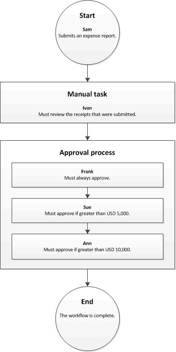

Workflow system overview
This topic describes the workflow system.
What is workflow?
The term workflow can be defined in two ways: as a system and as a business process.
Workflow is a system
Workflow is a system that runs on the Application Object Server (AOS). The workflow system provides functionality that you can use to create individual workflows, or business processes.
Workflow is a business process
A workflow represents a business process. It defines how a document flows, or moves, through the system by showing who must complete a task, make a decision, or approve a document. For example, the following illustration shows a workflow for expense reports.

To better understand this workflow, suppose that Sam submits an expense report for USD 7,000. In this scenario, Ivan must review the receipts that Sam routes to him. Then Frank and Sue must approve the expense report. Now suppose that Sam submits an expense report for USD 11,000. In this scenario, Ivan must review the receipts, and Frank, Sue, and Ann must approve the expense report.
Benefits of using the workflow system
There are several benefits of using the workflow system in your organization:
- Consistent processes – You can define how specific documents, such as purchase requisitions and expense reports, are processed. By using the workflow system, you ensure that documents are processed and approved in a consistent and efficient manner.
- Process visibility – You can track the status, history, and performance metrics of workflow instances. This helps you determine whether changes should be made to the workflow to improve efficiency.
- Centralized work list – Users can view a centralized work list that displays the workflow tasks and approvals that are assigned to them.
Workflow content
- Workflow system architecture (This is an external linThis link was changed due to HTMLfromRepoGenerator)
- Workflow elements
- Actions in workflow approval processes
- Create workflows overview
- Configure workflow properties
- Configure manual tasks in a workflow
- Configure automated tasks in a workflow
- Configure approval processes in a workflow
- Configure approval steps in a workflow
- Configure manual decisions in a workflow
- Configure conditional decisions in a workflow
- Configure parallel activities in a workflow
- Configure parallel branches in a workflow
- Configure line-item workflows
- Workflow FAQ